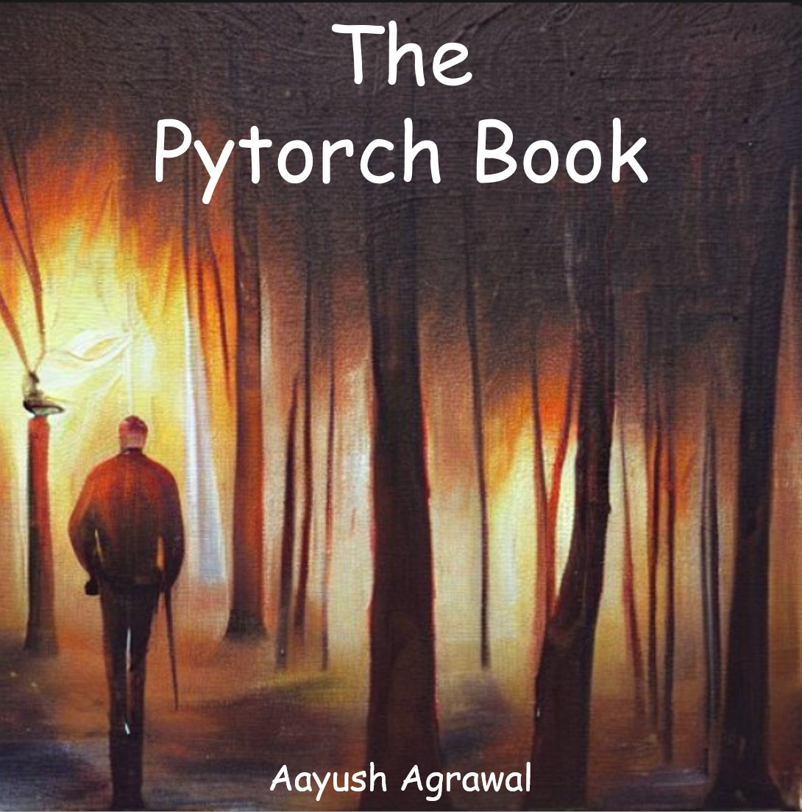

The PyTorch Book

Preface
What is this book about?
This is a collection of content compiled during my journey to learn PyTorch, machine learning, and deep learning. The book will primarily cover practical applications of PyTorch and popular frameworks that build upon PyTorch, such as FastAI and Huggingface. Please note that this book is a work in progress and additional chapters will be added over time.I hope that this book, with its collection of theory and practical projects, will be useful for others who are also learning PyTorch.
Contribute
The Pytorch book is a comprehensive, open-source resource on PyTorch and deep learning using only free software in Python. Its goal is to be accessible both financially and intellectually.
If you found this book to be valuable, you can support it by sending a Amazon gift card to aayushmnit@gmail.com. These funds will be used to upgrade my machine and buying books/courses to continue my research. Alternatively, you can contribute by fixing typos, suggesting edits, or providing feedback on passages that were unclear. Simply go to the book’s repository and open an issue.
Finally, if you enjoyed this content, please consider sharing it with others who might find it useful and consider giving it a star✨ on GitHub.